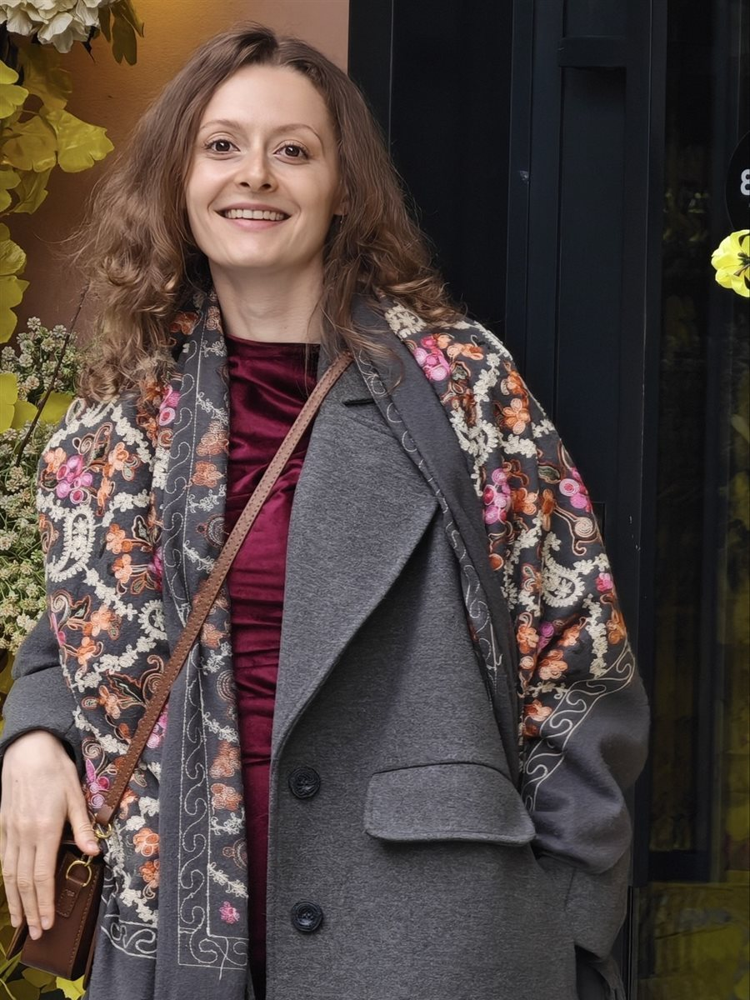
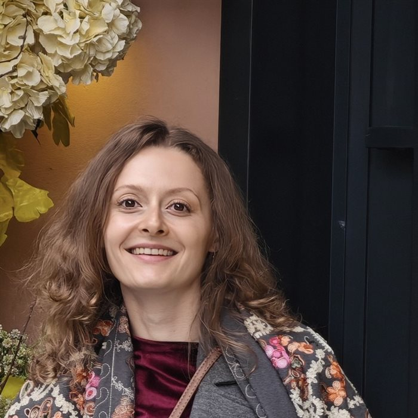

Партнёр не слышит и отдаляется: что делать, если вас игнорируют
Партнёр игнорирует, не слышит или не берёт ответственность? Разбираем, что стоит за этим, что можно сделать самой и когда пора обратиться к психологу.
Читать статьюПсихолог по отношениям · Москва
Помогаю женщинам разобраться, почему свидания не превращаются в отношения, почему партнёр отдаляется или не хочет брать на себя ответственность — и построить отношения, в которых вас слышат.

Обо мне

Я психолог, работаю с женщинами, для которых тема отношений с мужчинами стала болезненной: свидания идут одно за другим, а до отношений дело не доходит, партнёр отдаляется или не готов вкладываться в семью. На сессии мы не просто обсуждаем ситуацию — ищем сценарий, который стоит за повторяющимися историями, и меняем его. Провожу консультации онлайн и очно в Москве.
Знакомства есть, а стабильных отношений — нет. Разбираемся, что мешает перейти от свиданий к близости и доверию.
Ощущение, что вас не слышат, а мужчина не готов брать на себя ответственность за отношения и семью. Работаем с тем, что стоит за этим — с обеих сторон.
Как я работаю
Разбираем конкретно вашу ситуацию — отношения, в которых вы сейчас, или паттерн, который повторяется годами.
Находим сценарий, который приводит к одним и тем же отношениям с разными мужчинами — и меняем именно его.
Учитесь говорить «нет», слышать потребности партнёра и свои — а не просто «поговорили и полегчало».
Сессия онлайн из любого города или очно в Москве — на ваш выбор.
Форматы работы
Консультация по видеосвязи, 1,5 часа. Подходит, если вы не в Москве или удобнее из дома.
Личная встреча в Москве, 1,5 часа. Стоимость кабинета оплачивается отдельно, обсуждаем при записи.
Стоимость
Периодичность встреч и формат сопровождения согласовываем индивидуально — напишите в Telegram или оставьте заявку.
Как это устроено
Оставляете заявку на сайте или пишете в Telegram.
Перед первой сессией заполняете анкету и выбираем формат — онлайн или очно.
Разбираем вашу ситуацию и сценарий, который стоит за повторяющимися историями в отношениях.
Уже за первый месяц вы увидите, в чём на самом деле проблема в ваших отношениях.
Частые вопросы
На сессии мы не «просто разговариваем» — ищем конкретный сценарий, который повторяется в ваших отношениях, и работаем с ним. Уже за первый месяц работы вы увидите, в чём реальная проблема в ваших отношениях, а не только в текущем партнёре.
По видеосвязи, в удобное для вас время. Работать можно из любого города — не только из Москвы.
По содержанию — ничем, формат тот же. Очная сессия проходит в кабинете в Москве, его аренда оплачивается отдельно от стоимости сессии.
1,5 часа — и в онлайн-, и в офлайн-формате.
Да, онлайн-формат подходит для любого города России — нужен только стабильный интернет для видеосвязи.
Чтобы создать отношения, которых вы хотите, мы проанализируем сценарий, в котором свидания не переходят в отношения, и что в этом сценарии стоит изменить.
Оставьте заявку в форме ниже или напишите напрямую в Telegram — @mariannabespalova.
Запись
Расскажите коротко о своей ситуации — отвечу и подберём удобный формат работы.
Блог
Партнёр игнорирует, не слышит или не берёт ответственность? Разбираем, что стоит за этим, что можно сделать самой и когда пора обратиться к психологу.
Читать статьюКак проходит консультация психолога по отношениям: с чем приходят, как устроена сессия онлайн и очно, сколько стоит и как подготовиться к первой встрече.
Читать статью